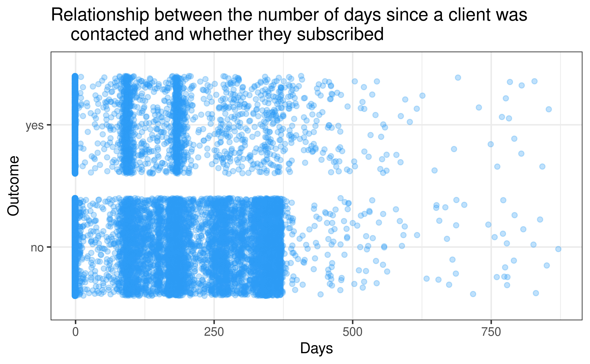

Client Behavior Prediction Model
For term-deposit subscriptions in banking
Conquerors
Mia Bain, Charlie Ames, Konstantinos Loizides, Stefano Lema
University of Edinburgh
2021-12-03
Our question

Which variables (or combinations of these) are the most important indicators when determining whether an individual will subscribe to a term deposit? Can we use these to build a predictive model?
The General Picture
The results of the marketing campaign are as follows:

| #{data-background-image=“img/Theme.png”} Could the client’s jobs have had an impact on whether they subscribed to term deposits? |
|---|
#{data-background-image=“img/Theme.png”} Could the client’s duration of their last contact have had an impact on whether they subscribed to term deposits?  |
#{data-background-image=“img/Theme.png”} Is there a connection between the clients decision and what month of the year it is?
=======Could the client’s duration of their last contact have had an impact on whether they subscribed to term deposits?
Is there a connection between the clients decision and what month of the year it is?
>>>>>>> 84a9940d8b1a6aa98ebc08e8c25bb7f16b2b3eb8
| #{data-background-image=“img/Theme.png”} Is there a correlation between how the client was contacted and if they subscribed to the term deposit? |
|---|
| #{data-background-image=“img/Theme.png”} Do the number of days since the client has been contacted matter? |
|  |
#{data-background-image=“img/Theme.png”} Which numerical variables have the the strongest correlation? Is there some collinearity perhaps?
Correlation between numerical predictors  # Logistic Regression Model {data-background-image=“img/Theme2.png”}
# Logistic Regression Model {data-background-image=“img/Theme2.png”}
Which numerical variables have the the strongest correlation? Is there some collinearity perhaps?
Correlation between numerical predictors

banking_rec<- recipe(
y ~ .,
data = reduced_train_df
)
banking_rec <- banking_rec %>%
step_rm(pdays) %>%
#Removed this variable due to low impact on model.
step_cut(campaign, previous, breaks = c(0, 1)) %>%
#Only care about values x = 0 and x >= 1 for these variables.
step_cut(age, breaks = c(25,40,65)) %>%
#Created age groups
step_cut(balance, breaks = c(-0.1, 0.1, 1000, 10000)) %>%
#Created balance groups
step_cut(day, breaks = c(10,20)) %>%
#Categorized days variable into beginning, middle, or end of the month.
step_cut(duration, breaks = c(60, 120, 180, 240, 300, 360, 420, 480, 540, 600)) %>%
#Divided Calls by duration in minutes.
step_dummy(all_nominal(),-all_outcomes()) %>%
#Created Dummy Variables
step_zv(all_predictors())
#Removed Zero Variance VariablesInitial Results

Cross Validation
- We carried out cross validation to make sure our model was not subject to overfitting.
- This was done by partitioning the data into 10 subsets

Final Test
<<<<<<< HEADTime for the truth. We tested our model and the results were: . . .

Our Model Proved to be surprisingly successful!
=======Time for the truth. We tested our model and the results were:
<<<<<<< HEAD. . .
## New names:
## * `` -> ...1## Rows: 9043 Columns: 18## ── Column specification ────────────────────────────────────────────────────────
## Delimiter: ","
## chr (10): job, marital, education, default, housing, loan, contact, month, p...
## dbl (8): ...1, age, balance, day, duration, campaign, pdays, previous##
## ℹ Use `spec()` to retrieve the full column specification for this data.
## ℹ Specify the column types or set `show_col_types = FALSE` to quiet this message.## # A tibble: 1 × 3
## .metric .estimator .estimate
## <chr> <chr> <dbl>
## 1 roc_auc binary 0.912
Our Model Proved to be surprisingly successful!
Ethics
Models like the one we created are constantly used by financial institutions to predict future client behavior.